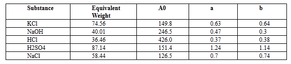

Civil Engineering →Sensor Lab →List Of Experiments
Simulate the performance of chemical sensor(PH)
pH Measurement pH is defined as the negative logarithm of the hydrogen ion concentration. pH = - log (H+) pH sensor pH is one of the most common analyses used in Process Industry. pH is actually a measurement of the activity of hydrogen ions in the sample. pH measurements run on a scale from 0 - 14, with 7.0 considered as neutral. Solutions with a pH value below 7.0 are considered as acids, and above 7.0 are designated as bases. The pH scale is logarithmic, so one unit change in pH value actually reflects a ten-fold change in the acidity. Working principle The pH measurement loop can be considered as a battery where the positive terminal is the measuring electrode and the negative terminal is the reference electrode. 'The measuring electrode', which is sensitive to the hydrogen ions, develop a potential (voltage) directly related to the hydrogen ion concentration of the solution. The reference electrode is stable regardless of any change in the hydrogen ion concentration. The pH meter consists of three major components: pH probe Temperature probe and The meter The pH probe consists of a glass, hydrogen-ion selective electrode, and a reference electrode, combined into a single unit. The glass electrode is specially treated for measuring the hydrogen ions, while the reference electrode is surrounded by silver chloride. It provides a “zero” or reference point for the measurement. This “zero” point means any change in potential measured at the glass electrode is attributed to hydrogen ions, and is expressed as pH. When the temperature and pH probes are immersed in the sample, the meter measures the potential difference between the glass electrode and the reference electrode. This electronic measurement is converted from mill volts to pH units, and the result appears on the display. If the temperature probe is not used during the pH measurement, the meter will assume a temperature of 25°C. Calibration of pH probe with buffer solution The calibration must be performed for buffers with pH 4.0, 7.00 and 9.2. At least a 2-point calibration must be performed at room temperature using buffers that meet the expected pH value of the sample. If a one-point calibration is performed, measurement errors are more for the sample that is being measured. If the temperature probe is not used at the time of calibration, default value considered is 25°C. Installation related issues The sensor should be mounted vertically (electrode facing downwards) whenever possible. When the probe is mounted at an angle, it should be more than 10º above the horizontal axis. Do not mount the sensor completely on its side or upside down. Sensor has to be calibrated before it is installed for the process. 1. Electrode and temperature probe rinsing Soaking the electrode in a pH 4 solution for 10 minutes is essential at the time of installation. 2. Installing/replacing the salt bridge Hold the sensor with the process electrode pointing upwards. Rinse the reference chamber of the sensor with deionized water. Fill the reference chamber of the sensor with 6 to 7 mL of Reference Cell Buffer solution to ensure the highest possible stability of the reference portion of the pH measurement. 3. Cleaning the sensor Optimum measurement accuracy depends on both the salt bridge and the measuring electrode glass. Frequency of cleaning depends upon the process solution. Measuring end of the sensor should be carefully wiped with a clean soft cloth. Then rinse it with distilled or de-ionized water. This will help in removing accumulated contamination. Soak the sensor for several minutes in the soap solution to ensure a thorough cleaning. Place the sensor in pH 7 buffer, for about 10 minutes to neutralize any remaining acid. Conductance Measurement: Theory Electrical conductivity is a measure of the ability of a solution to carry a current. Current flow in liquids differ from that in metals. Electrons cannot flow freely, but can be carried by the ions. Ions are formed when a solid such as salt is dissolved in a liquid to form electrical components having opposite electrical charges. For example, sodium chloride separates to form Na+ and Cl- ions. All ions present in the solution contribute to the current flow and therefore contribute to the conductivity measurement. Electrical conductivity can therefore be used as a measure of the concentration of ionizable solutes present in the sample. How well a solution conducts the electricity depends on number of factors. Factors Affecting Conductivity Measurement:
Conductivity may be measured by applying an alternating electrical current (I) to two electrodes immersed in a solution and measuring the resulting voltage (V). During this process, the cations migrate to the negative electrode, the anions to the positive electrode and the solution acts as an electrical conductor. Conductivity is typically measured in aqueous solution of electrolytes. Electrolyte is a substance containing ions, i.e. a solution of ionic salt or compounds that ionize the solution. The ions formed in solution are responsible for carrying the electric current. Electrolytes include acids, bases and salts and can be either strong or weak. The accuracy of conductivity measurements can be influenced by the following factors: 1.Polarization 2.Contamination 3.Geometry 4.Frequency change Temperature In conductivity simulator, to solve the equation use following data 